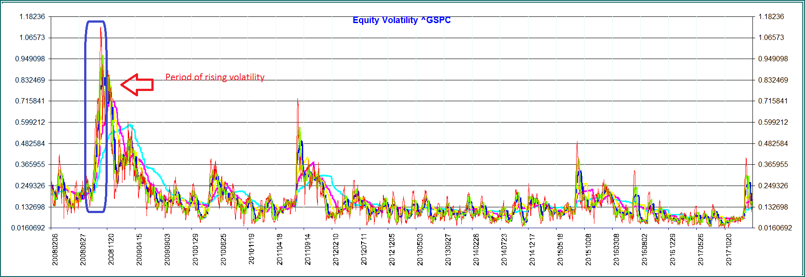

Procyclicality
Procyclic as used here is a positive correlation between a market place action and the market price of the underlying asset. For example, as price increases the price will increase further as buyers enter the market. As the price decreases sellers appear and further depress prices.
This type of behaviour can lead to panic buying or panic selling. In addition, holders of collateral will demand increased collateral forcing participants to step up these actions. On the other hand, if the volatility is low, there is a perceived lack of risk resulting in "loading up" of positions that could become very vulnerable when volatility returns. Weighting factors can be used to ameliorate this action.
JP Morgan initially published a database with the Exponentially Weighted Moving Average (EWMA). This methodology applies the weighting formula, [σ(n)]2=λ[σ(n-1)]2+(1-λ)[μ(n-1)]2, where λ is a decay factor, e.g. from 0.94 to 0.99 that determines the importance given to recent events. A low lambda provides more smoothing and a lambda of 1 is the same as no weighting. μ(n) is the change in the risk factor price. Use of a scale will decrease volatility as volatility increases and vice versa. Many exchanges and other authorities reference the EWMA model as a means of reducing procyclicality.
High Volatility - EWMA Weighted Risk is Lower
<
The financial crisis of 2008 was a period of high volatility for most assets including the S&P500 index (^GSPC) above. EWMA weighting during this period results in a risk amount of slightly more than 25,000 as compared to the unweighted risk over 30,000. The weighting dampens the higher volatility in order to deter panic selling or buying.

Click below to compare volatility, Weighted Risk and Unweighted Risk
Low Volatility - EWMA Weighted Risk is Higher
he volatility drops from 26% to 14% close to the latest date (right side of chart GOOG). Viewing the EWMA Weighted chart for the days following, the EWMA weighted risk is 10,000 compared to the unweighted chart where the risk is about 7,000. The EWMA model adjusts for the lower volatility by assigning a greater risk in order to deter imprudent accumulation of positions..
 Click below to compare volatility, Weighted Risk and Unweighted Risk
Click below to compare volatility, Weighted Risk and Unweighted Risk
The holding period for a financial instrument is the estimate of the time horizon for effective hedging or close out of that product, particularly under stressed market conditions. An example, where loss of liquidity is enforced by an exchange, is when a 20% decline in the S&P 500 index will terminate trading for the remainder of the trading day in both the cash equity market and all U.S. based equity index futures and options, including E-mini S&P 500 and S&P 500 futures and options. Bitcoin futures traded on the CME are also under a 20% circuit breaker.
In the OTC market, the bankruptcy of Lehman Brothers is the classic case of time to settle OTC derivatives. Although Retail OTC derivatives counterparties of Lehman terminated their contracts within weeks of bankruptcy filing under the safe harbor provisions, final settlement was a long process such that about 1,000 derivatives contracts remained "not settled" by the beginning of 2013, more than 4 years after the start of Lehman's bankruptcy. (Ref: The Failure Resolution of Lehman Brothers, M.J. Fleming and A. Sarkar, NewYorkFed).
Supervisory requirements for bank minimum capital or market risk using expected shortfall, require liquidity horizons of 10 days for interest rate risk in specified currencies, 10 days for equity prices of large cap instruments, 20 days for small cap equity, 10 days for FX rates in specified currency pairs, and a range of 20 to 120 days for commodities. (Ref: BCBS, Minimum capital requirements for market risk, Jan 2016).
Holding periods are used in financial models to extend the daily risk into term risk where volatility increases proportional to the square roof of time. If a daily volatility is observed, then the annualized volatility is a multiplication factor of the square root of 252 (trading days). In HVar, it is possible to observe 2-day changes to obtain risk over a 2-day holding period, however this tends to breakdown with longer time horizons due to lack of data. For example, a method is to take the standard deviation of daily changes in a value of an instrument and multiply by the SQRT of 5, if the time horizon is 5 business days.
Holding periods thus impact the amount of collateral/initial margin required by the counterparty to a trade and has been a source of determining whether a counterparty wishes to do a tailored OTC transaction or a standardized exchange traded transaction, since typically, a listed transaction holding period could be 2-days. A similar OTC trade could have a holding period of 5 days.
Synonyms for holding period: Margin Period of Risk (MPOR), Close-out Period, Liquidity Horizon, Liquidation Time
Observation Period
The observation period is the period over which the historical prices are observed. Basel’s Principles for Market Infrastructures, PFMI, and the standard to which Central Counterparties (CCP) who wish to be PFMI compliant must adhere to, expects that a CCP include peak historic price volatilities as well as scenarios in light of current and evolving market conditions. Historical scenarios should not be excluded purely on account of passage of time. (BIS: Resilience and recovery of central counterparties (CCPs): Further guidance on the PFMI, Aug 2016, d149.pdf)
Basel's Minimum Capital Requirements for Market Risk require that for measures based on current observations banks must update their data sets at least once a month or when the market is subject to material changes. For the stressed period banks must identify the 12 month period of stress over the observation horizon in which the portfolio experiences the largest loss. This horizon must, at a minimum span back to and include 2007. Observations within this period must be equally weighted (e.g. not subject to EWMA). Banks must update the 12-month stressed periods no less than monthly. (BIS: Minimum capital requirements for market risk Jan 2016, bcbs352).